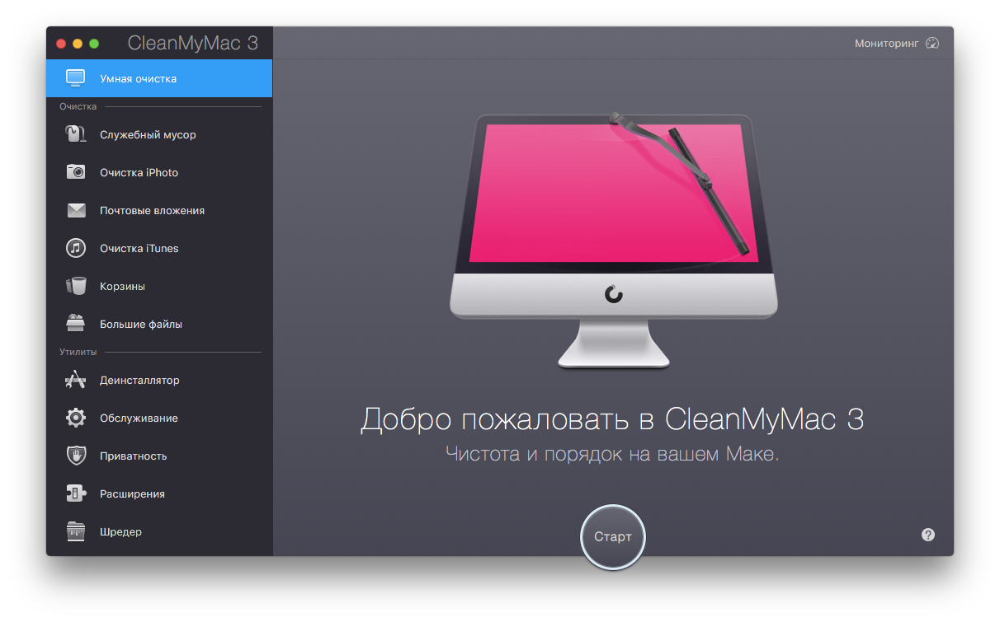

Добро пожаловать в CleanMyMac 3!
О CleanMyMac 3
CleanMyMac 3 – это следующая эволюционная ступень популярной программы для очистки места на Mac. В этой версии CleanMyMac приобрела новый привлекательный интерфейс и вышла за рамки возможностей обычной утилиты для очистки. Теперь программа не только удаляет гигабайты мусора, но и выполняет ряд полезных задач для оптимизации Вашего Mac.

Что нового?
- Модуль «Фотомусор» - удаляет вспомогательные файлы программы «Фото», а также заменяет исходные фотографии в «тяжелом» формате RAW их высококачественными JPEG-копиями.
- Модуль «Почтовые вложения» - удаляет копии вложений и загруженных файлов, которые сохранены на Маc.
- Модуль «Очистка iTunes» - удаляет старые резервные копии данных с iOS устройств, поврежденные загрузки, устаревшие обновления и локальные копии программ для iOS.
- Модуль «Обслуживание» - содержит набор разнообразных задач для оптимизации Вашего Мас.
- Модуль «Приватность» - очищает историю чатов, списки загрузок и посещенных страниц, а также файлы cookie, списки недавно использованных объектов и другое.
- Мониторинг - отображает параметры производительности в режиме реального времени и позволяет очистить ОЗУ.
- Меню CleanMyMac 3 - предоставляет доступ к полезным инструментам мониторинга даже когда CleanMyMac 3 не запущен.
- Оповещения о состоянии Мас - помогают выявить и решить возможные аппаратные и программные проблемы Вашего Мас.
- Обновленный интерфейс в стиле Yosemite.
- Новые локализации: украинская и голландская.
Системные требования
- macOS 10.8 - 10.12 (до CleanMyMac 3.8.4);
- macOS 10.9 и выше (CleanMyMac 3.8.5 и выше);
- 43.3 МБ дискового пространства;
- только Intel Mac.